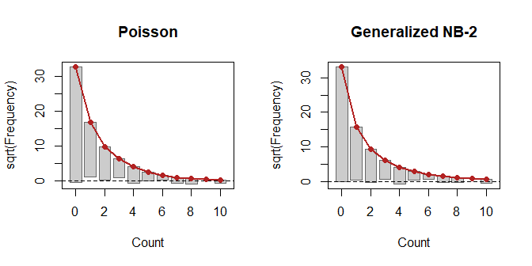
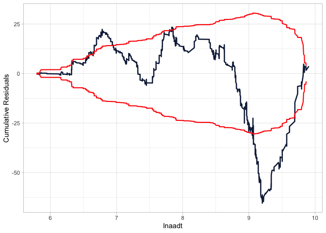
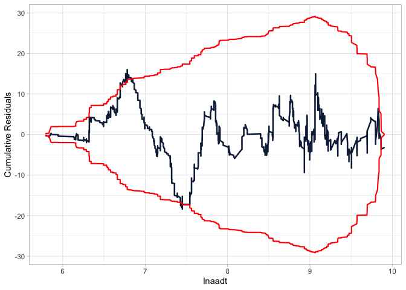
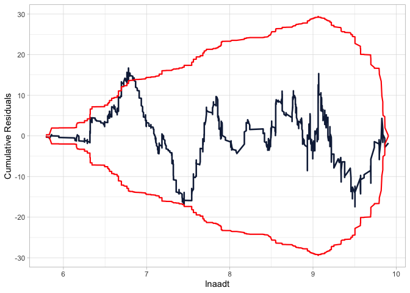

The goal of flexCountReg is to provide functions that allow the analyst to estimate count regression models that can handle multiple analysis issues, including:
- many count distributions beyond the Poisson and negative binomial (see the list below), with any distribution parameter modeled as a function of variables (generalized count models);
- your own count distributions, defined from a log probability function with
new_count_family()and usable in every model; - smooth (generalized additive) effects with the penalized
s()andte()terms of mgcv in the mean, the distribution parameters, the zero model and random-parameter heterogeneity, with automatic smoothing andplot_smooths(); - effects that change over time (temporal instability) with
tv(), with period-by-period effects and tests fromtemporal_effects()andtemporal_tests(); - total-plus-allocation models of a count and its split across categories (such as crashes by severity, or by crash type with a multinomial logit split) with
countreg_alloc(); - underreporting, and zero-inflated or hurdle versions of every distribution;
- random parameters, with heterogeneity in their means and variances, analytic gradients, separate simulation draws for each panel, and exact, simulated and Empirical Bayes (observation-specific) predictions;
- hierarchical (mixed-effects) models with normal random effects at several levels, nested or crossed, for every count family (
countreg_hier(), with lme4-style terms such as(1 + lnaadt | county) + (1 | year)); - random-effects panel models (negative binomial, Poisson-Lindley, negative multinomial) and fixed-effects models (
countreg_fe(): Poisson with any number of fixed-effect dimensions, or any family with one); - finite mixtures and latent-class count regressions, with constant, covariate-dependent or known class proportions, shared or class-specific parameters, different families in different classes, one class per panel, and random parameters within the classes;
- inference with Hessian-based, robust, cluster-robust (one-way or multiway) or bootstrap standard errors, frequency or sampling weights, and methods for the sandwich and lmtest packages;
- model comparison and diagnostics: likelihood-ratio tests, comparison tables, marginal effects, CURE plots, rootograms and randomized quantile residuals;
- an interactive app (
launch_app()) for the whole workflow, from data to a downloadable R script that reproduces the analysis.
Fitted models work with the standard R generics (coef(), vcov(), AIC(), BIC(), confint(), predict(), simulate(), update(), …), with tidy(), glance() and augment(), and with tidymodels through the count_reg() parsnip model.
Installation
You can install the development version of flexCountReg using:
# install.packages("devtools")
devtools::install_github("jwood-iastate/flexCountReg")Interactive app
flexCountReg includes an interactive app for analysts who prefer to work without writing code, and for anyone who wants a quick way to explore models before scripting them. Start it from R:
The app opens in a web browser, with one tab for each step of an analysis:
- Data: load one of the example datasets or a CSV file, inspect the columns and missing values, and create new variables (logs, powers, standardized values, indicators, products, ratios, categories and factors).
- Build: choose the model (count regression, random parameters, random-effects panel models, finite mixtures or latent classes), the count distribution, response, predictors, interactions between predictors, exposure or offset, frequency weights and panel identifier, and the model-specific options. The draft is checked before it can be estimated.
- Fit: models are estimated in the background, so the app stays responsive and long fits can be canceled. The tab shows the summary, coefficients, marginal effects (or elasticities) with standard errors, numerical checks (convergence, gradient, conditioning of the information matrix) and, for mixtures, class sizes and starts.
- Diagnose: rootograms, randomized quantile residuals and CURE plots for any of the fitted models, with the plots saved as JPEG files at the size and resolution you choose (for papers and reports).
- Compare: log-likelihood, AIC and BIC of several fits, with a warning when they are not comparable (different rows, responses or units).
- Predict: expected counts, confidence or prediction intervals, and tolerance intervals for an editable table of scenarios or for a CSV file of new data; variables you created on the Data tab are created in the new data the same way.
- Export: download the analysis.
Everything the app runs is also written as R code. The R code panel at the bottom shows the session script: the data loading, every new variable, every fit, diagnostic, prediction and comparison, in the order they ran, using the package’s own functions (countreg(), countreg_rp(), rootogram(), tolerance_interval(), …). The app evaluates exactly this code, and the Export tab downloads it as analysis.R together with the settings of each fit and a manifest of versions and warnings, so the analysis can be rerun, modified and shared without the app. For example, a session that loads data, adds a variable and fits a model produces code like:
data_1 <- local({
env <- new.env()
utils::data(list = "washington_roads", package = "flexCountReg", envir = env)
env[["washington_roads"]]
})
data_1[["aadt10k"]] <- as.integer(data_1[["AADT"]] > 10000)
fit_1 <- flexCountReg::countreg(formula = Total_crashes ~ lnaadt + aadt10k +
offset(log(Length)), data = data_1, family = "NB2", method = "BFGS",
max.iters = 1000L)
fit_1_summary <- summary(fit_1)The app uses the shiny, bslib, DT, callr, jsonlite and zip packages, which are suggested rather than required by flexCountReg; launch_app() offers to install any that are missing. Uploaded data stay on your computer.
Functions and Data
Model Estimation Functions
-
countreg()estimates cross-sectional count regression models with any of the distributions below, optional models for the distribution parameters, underreporting, and zero-inflated or hurdle zero models, with Hessian-based, robust, cluster-robust (cluster = ~ site) or bootstrap standard errors. -
countreg_rp()estimates random parameters count models, optionally with panels, correlated random parameters, and heterogeneity in the means and variances of the random parameters. Fits use the analytic gradient of the simulated likelihood and, by default, separate Halton draws for each panel. -
countreg_mix()andcountreg_lc()estimate finite-mixture and latent-class count models (the same engine under two vocabularies), with several reproducible starts, andcomponent_probs()/class_probs()give prior or posterior class probabilities. - Smooth terms such as
s(lnaadt)orte(lnaadt, lnlength)can be used in the formulas of every model:countreg(),countreg_rp(),countreg_fe(), the random-effects panel models (renb(),repois(),poislind_re(),negmultinom()), and finite mixtures and latent classes (countreg_mix(),countreg_lc(), including smooth class membership); the smoothing parameters are selected automatically,summary()reports each smooth’s effective degrees of freedom,smooth_estimates()andplot_smooths()show the estimated curves with pointwise and simultaneous bands, andsmooth_check(),concurvity_fcr(),plot_derivatives(),plot_surface()andcalibration_by()check them. Seevignette("smooth-effects", package = "flexCountReg"). -
countreg_fe()estimates fixed-effects count models: Poisson by the conditional likelihood (one dimension) or IRLS with alternating projections (site and year, …), and any other family, including user-defined ones, by the concentrated dummy-variable likelihood, with an optional split-panel jackknife. Standard errors are cluster-robust by default; estimates equal those offixest::fepois()andfixest::fenegbin(). -
cre = ~ xincountreg_rp(),renb()andrepois()adds the means of time-varying regressors within each unit (correlated random effects, Mundlak 1978), andcre_test()tests random against fixed effects. -
renb()estimates the random effects negative binomial regression model. -
poisLind.re()(alsopoislind_re()) estimates the random effects Poisson-Lindley model. -
negmultinom()estimates negative multinomial (random effects) panel models (NM1, NM2 and NM-P). -
repois()estimates the random effects Poisson model with a gamma random effect. -
new_count_family()defines a count distribution from its log probability function (with optional mean, variance, CDF and random-draw functions) for use asfamilyincountreg(),countreg_rp(),countreg_mix()andcountreg_lc();check_count_family()tests it numerically. Seevignette("user-defined-count-distributions", package = "flexCountReg"). -
count_reg()is a parsnip model specification with a"flexCountReg"engine, for use with tidymodels (the distribution can be tuned withcount_family()).
Working with Fitted Models
-
summary()gives the coefficient table, standard-error type, fit statistics and a likelihood-ratio test against the Poisson model. -
predict()gives expected counts (one per row ofnewdata,NAfor incomplete rows), the probability of each count, and the components of underreporting and zero models. Forcountreg()models it also gives confidence intervals for the expected count and prediction intervals for a new count (interval = "confidence"or"prediction"). For random parameters models it offers exact, simulated and Empirical Bayes ("Individual") predictions. -
tolerance_interval()gives content tolerance intervals forcountreg()models: count ranges intended to contain at least a stated share of the outcome distribution with a stated confidence. -
coef(),vcov(),confint(),logLik(),AIC(),BIC(),nobs(),fitted(),residuals()(response, Pearson and randomized quantile),simulate()andupdate()work as for other R models. -
vcov(m, type = "cluster", cluster = ~ corridor)recomputes cluster-robust (one-way or multiway) covariances after the fit, without refitting;type = "robust"and"hessian"are also available.estfun()andbread()methods letsandwich::vcovCL(),sandwich::vcovHC()andlmtest::coeftest()work with flexCountReg models. -
tidy(),glance()andaugment()return tibbles in the broom format.
Model Evaluation, Comparison, and Convenience Functions
-
regCompTest()compares a model with a base model, or two fitted models, with a likelihood ratio test, AIC, BIC and McFadden’s pseudo R-squared. -
regCompTable()creates a publication-ready table comparing multiple models. -
margEffTable()computes marginal effects (or elasticities) with delta-method or bootstrap standard errors. -
cureplot()generates a CURE plot for the specified model, based on the cureplots package. -
rootogram()compares observed and expected count frequencies. -
mae()andrmse()compute the mean absolute error and root mean squared error;myAIC()andmyBIC()compute AIC and BIC from a log-likelihood. -
halton_dists(),corr_haltons()andcor2cov()generate (correlated) Halton draws and convert correlation matrices to covariance matrices.
Distribution Functions
Density (d), distribution (p), quantile (q) and random generation (r) functions are provided for each distribution:
Count distributions
- Conway-Maxwell-Poisson (COM):
dcom,pcom,qcom,rcom - Delaporte:
ddelaporte,pdelaporte,qdelaporte,rdelaporte - Discrete Weibull:
ddweib,pdweib,qdweib,rdweib - Double Poisson:
ddpo,pdpo,qdpo,rdpo - Gamma Count:
dgcount,pgcount,qgcount,rgcount - Generalized Hermite:
dghermite,pghermite,qghermite,rghermite - Generalized Poisson Version 1:
dgp1,pgp1,qgp1,rgp1 - Generalized Poisson Version 2:
dgp2,pgp2,qgp2,rgp2 - Generalized Waring:
dgwar,pgwar,qgwar,rgwar - Hyper-Poisson:
dhpois,phpois,qhpois,rhpois - Negative Binomial-Generalized Exponential:
dnbge,pnbge,qnbge,rnbge - Poisson-Generalized-Exponential:
dpge,ppge,qpge,rpge - Poisson-Inverse-Gamma:
dpinvgamma,ppinvgamma,qpinvgamma,rpinvgamma - Poisson-Inverse-Gaussian:
dpinvgaus,ppinvgaus,qpinvgaus,rpinvgaus - Poisson-Lindley:
dplind,pplind,qplind,rplind - Poisson-Lindley-Gamma (Negative Binomial-Lindley):
dplindGamma,pplindGamma,qplindGamma,rplindGamma - Poisson-Lindley-Lognormal:
dplindLnorm,pplindLnorm,qplindLnorm,rplindLnorm - Poisson-Lognormal:
dpLnorm,ppLnorm,qpLnorm,rpLnorm - Poisson-Weibull:
dpoisweibull,ppoisweibull,qpoisweibull,rpoisweibull - Polya-Aeppli:
dpaeppli,ppaeppli,qpaeppli,rpaeppli - Sichel:
dsichel,psichel,qsichel,rsichel
See ?count_families for every distribution available in countreg() and countreg_rp(), with its parameters, variance and model features.
Continuous distributions
- Inverse Gamma:
dinvgamma,pinvgamma,qinvgamma,rinvgamma - Inverse Gaussian:
rinvgaus - Lindley:
dlindley,plindley,qlindley,rlindley - Triangular:
dtri,ptri,qtri,rtri - Lognormal:
moment_lognormalfor the moments of the lognormal distribution
Data
Three datasets are included:
-
washington_roads: a sample of Washington primary 2-lane roads from the years 2016-2018 (507 road segments, each observed in up to three years). Data for the roads, traffic volumes (AADT) and associated crashes were obtained from the Highway Safety Information System (HSIS). -
abalone_rings: shell-ring counts and physical measurements of 4,177 abalone from the UCI Machine Learning Repository (CC BY 4.0), a non-transportation example with conditionally underdispersed counts. -
stream_salamanders: repeated counts of seven stream salamander groups at 23 sites in Kentucky (Price et al., 2016; Dryad, CC0), zero-heavy, overdispersed and grouped by site.
Probability Distributions
As noted in the list of functions, the probability distributions below are included in the flexCountReg package. Details of the distributions are provided in the documentation (help files).
Continuous Distributions
- Inverse Gamma Distribution
- Triangle Distribution
Count Distributions
Distributions that Handle Equidispersion
- Poisson
Distributions that handle Underdispersion (and Overdispersion)
- Conway-Maxwell-Poisson (COM) Distribution
- Generalized Poisson Distribution (Types 1 and 2)
- Discrete Weibull Distribution
- Double Poisson Distribution
- Hyper-Poisson Distribution
- Gamma Count (Renewal) Distribution
Distributions that Handle Overdispersion
- Negative Binomial in various forms (NB-1, NB-2, and NB-P)
- Poisson-Inverse-Gaussian Distribution (Types 1 and 2)
- Poisson-Inverse-Gamma
- Poisson-Lognormal Distribution
- Poisson-Weibull Distribution
- Sichel Distribution
- Generalized Waring Distribution
- Delaporte Distribution
- Hermite Distribution (orders 2, 3 and 4; bounded overdispersion)
- Polya-Aeppli (Poisson-Tweedie, power 1.5) Distribution
Distributions that Handle Higher Densities of Zeros and Overdispersion
- Poisson-Generalized-Exponential Distribution
- Poisson-Lindley Distribution
- Poisson-Lindley-Gamma (Negative Binomial-Lindley) Distribution
- Poisson-Lindley-Lognormal Distribution
- Negative Binomial-Generalized Exponential (NBGE) Distribution
Example
The following is an example of using flexCountReg to estimate a negative binomial (NB-2) regression model with the overdispersion parameter as a function of predictor variables:
library(flexCountReg)
data("washington_roads")
washington_roads$AADT10kplus <- ifelse(washington_roads$AADT > 10000, 1, 0)
gen.nb2 <- countreg(Total_crashes ~ lnaadt + lnlength + speed50,
data = washington_roads, family = "NB2",
dis_param_formula_1 = ~ speed50, method = "BFGS")
summary(gen.nb2)
#> Call:
#> countreg(formula = Total_crashes ~ lnaadt + lnlength + speed50,
#> data = washington_roads, family = "NB2", dis_param_formula_1 = ~speed50,
#> method = "BFGS")
#>
#> Model: countreg | family: NB2 | optimizer: BFGS
#> Iterations: 40
#> Convergence: successful convergence
#>
#> Coefficients (standard errors: Hessian-based):
#> Estimate Std. Error z value Pr(>|z|)
#> (Intercept) -8.7564 0.4404 -19.88 < 2e-16 ***
#> lnaadt 1.0803 0.0518 20.86 < 2e-16 ***
#> lnlength 0.7588 0.0691 10.98 < 2e-16 ***
#> speed50 -0.5407 0.1173 -4.61 4.0e-06 ***
#> ln(alpha):(Intercept) -1.3233 0.3150 -4.20 2.7e-05 ***
#> ln(alpha):speed50 1.2670 0.4849 2.61 0.009 **
#> ---
#> Signif. codes: 0 '***' 0.001 '**' 0.01 '*' 0.05 '.' 0.1 ' ' 1
#>
#> Log-likelihood: -1082.176 | AIC: 2176.352 | BIC: 2208.235
#> N: 1501The results are also available as tibbles, and the model can be compared with a Poisson base model:
tidy(gen.nb2, conf.int = TRUE)
#> # A tibble: 6 × 8
#> term component estimate std.error statistic p.value conf.low conf.high
#> <chr> <chr> <dbl> <dbl> <dbl> <dbl> <dbl> <dbl>
#> 1 (Intercept) mean -8.76 0.440 -19.9 5.78e-88 -9.62 -7.89
#> 2 lnaadt mean 1.08 0.0518 20.9 1.23e-96 0.979 1.18
#> 3 lnlength mean 0.759 0.0691 11.0 4.63e-28 0.623 0.894
#> 4 speed50 mean -0.541 0.117 -4.61 4.02e- 6 -0.771 -0.311
#> 5 ln(alpha):… distribu… -1.32 0.315 -4.20 2.66e- 5 -1.94 -0.706
#> 6 ln(alpha):… distribu… 1.27 0.485 2.61 8.98e- 3 0.317 2.22
glance(gen.nb2)
#> # A tibble: 1 × 10
#> model family logLik AIC BIC df nobs n_groups converged vcov_type
#> <chr> <chr> <dbl> <dbl> <dbl> <int> <int> <int> <lgl> <chr>
#> 1 countreg NB2 -1082. 2176. 2208. 6 1501 NA TRUE hessian
regCompTest(gen.nb2, basemodel = "Poisson", variables = TRUE)$statistics
#> No LR test: the POISSON base model is not nested in the fitted model with a regular restriction (the restriction sets ln(alpha) to its boundary, which is not regular when ln(alpha) has a formula). Compare the models with AIC and BIC.
#> # A tibble: 8 × 3
#> Statistic Model BaseModel
#> <chr> <dbl> <dbl>
#> 1 Log-likelihood -1082. -1101.
#> 2 Number of parameters 6 4
#> 3 AIC 2176. 2209.
#> 4 BIC 2208. 2230.
#> 5 LR Test Statistic NA NA
#> 6 LR degrees of freedom NA NA
#> 7 LR p-value NA NA
#> 8 McFadden's Pseudo R^2 0.0167 NAA rootogram shows how well the fitted distribution reproduces the observed counts; bars that end above or below zero show counts that are over- or under-predicted:
pois <- update(gen.nb2, family = "Poisson", dis_param_formula_1 = NULL)
oldpar <- par(mfrow = c(1, 2))
rootogram(pois, main = "Poisson")
rootogram(gen.nb2, main = "Generalized NB-2")
par(oldpar)Checking the CURE plot:
cureplot(gen.nb2, indvar = "lnaadt")
#> Warning: Removed 1 row containing missing values or values outside the scale range
#> (`geom_line()`).
#> Removed 1 row containing missing values or values outside the scale range
#> (`geom_line()`).
Modifying the model:
gen.nb2 <- countreg(Total_crashes ~ lnaadt + lnlength + speed50 +
ShouldWidth04 + AADT10kplus + I(AADT10kplus / lnaadt),
data = washington_roads, family = "NB2",
dis_param_formula_1 = ~ lnlength, method = "BFGS")
summary(gen.nb2)
#> Call:
#> countreg(formula = Total_crashes ~ lnaadt + lnlength + speed50 +
#> ShouldWidth04 + AADT10kplus + I(AADT10kplus/lnaadt), data = washington_roads,
#> family = "NB2", dis_param_formula_1 = ~lnlength, method = "BFGS")
#>
#> Model: countreg | family: NB2 | optimizer: BFGS
#> Iterations: 50
#> Convergence: successful convergence
#>
#> Coefficients (standard errors: Hessian-based):
#> Estimate Std. Error z value Pr(>|z|)
#> (Intercept) -7.6756 0.4877 -15.74 < 2e-16 ***
#> lnaadt 0.9296 0.0569 16.32 < 2e-16 ***
#> lnlength 0.8534 0.0699 12.21 < 2e-16 ***
#> speed50 -0.3999 0.1091 -3.67 0.00025 ***
#> ShouldWidth04 0.2606 0.0916 2.84 0.00446 **
#> AADT10kplus 5.9613 4.5117 1.32 0.18640
#> I(AADT10kplus/lnaadt) -50.1377 43.0019 -1.17 0.24364
#> ln(alpha):(Intercept) -1.9126 0.6648 -2.88 0.00401 **
#> ln(alpha):lnlength -0.4301 0.4991 -0.86 0.38880
#> ---
#> Signif. codes: 0 '***' 0.001 '**' 0.01 '*' 0.05 '.' 0.1 ' ' 1
#>
#> Log-likelihood: -1061.914 | AIC: 2141.828 | BIC: 2189.653
#> N: 1501
cureplot(gen.nb2, indvar = "lnaadt")
#> Warning: Removed 1 row containing missing values or values outside the scale range
#> (`geom_line()`).
#> Removed 1 row containing missing values or values outside the scale range
#> (`geom_line()`).
Estimating another model (NB-P), without the interaction:
gen.nbp <- countreg(Total_crashes ~ lnaadt + lnlength + speed50 +
ShouldWidth04 + AADT10kplus,
data = washington_roads, family = "NBP",
dis_param_formula_1 = ~ lnlength, method = "BFGS")
summary(gen.nbp)
#> Call:
#> countreg(formula = Total_crashes ~ lnaadt + lnlength + speed50 +
#> ShouldWidth04 + AADT10kplus, data = washington_roads, family = "NBP",
#> dis_param_formula_1 = ~lnlength, method = "BFGS")
#>
#> Model: countreg | family: NBP | optimizer: BFGS
#> Iterations: 53
#> Convergence: successful convergence
#>
#> Coefficients (standard errors: Hessian-based):
#> Estimate Std. Error z value Pr(>|z|)
#> (Intercept) -7.7637 0.4934 -15.74 < 2e-16 ***
#> lnaadt 0.9382 0.0577 16.26 < 2e-16 ***
#> lnlength 0.8362 0.0696 12.02 < 2e-16 ***
#> speed50 -0.3843 0.1108 -3.47 0.00052 ***
#> ShouldWidth04 0.2578 0.0923 2.79 0.00522 **
#> AADT10kplus 0.6893 0.1331 5.18 2.2e-07 ***
#> ln(alpha):(Intercept) -1.4960 0.5539 -2.70 0.00692 **
#> ln(alpha):lnlength -0.1673 0.4558 -0.37 0.71357
#> ln(p) 0.5247 0.1832 2.86 0.00418 **
#> ---
#> Signif. codes: 0 '***' 0.001 '**' 0.01 '*' 0.05 '.' 0.1 ' ' 1
#>
#> Log-likelihood: -1062.195 | AIC: 2142.389 | BIC: 2190.214
#> N: 1501Checking the CURE plot (notice that the CURE plot is better in this case than the NB-2 without the interaction and still better than the modified NB-2):
cureplot(gen.nbp, indvar = "lnaadt")
Creating a table to compare the models:
regCompTable(list("Generalized NB-2" = gen.nb2, "Generalized NB-P" = gen.nbp))
#> # A tibble: 15 × 3
#> Parameter `Generalized NB-2` `Generalized NB-P`
#> <chr> <chr> <chr>
#> 1 (Intercept) -7.676 (0.488)*** -7.764 (0.493)***
#> 2 lnaadt 0.93 (0.057)*** 0.938 (0.058)***
#> 3 lnlength 0.853 (0.07)*** 0.836 (0.07)***
#> 4 speed50 -0.4 (0.109)*** -0.384 (0.111)***
#> 5 ShouldWidth04 0.261 (0.092)** 0.258 (0.092)**
#> 6 AADT10kplus 5.961 (4.512) 0.689 (0.133)***
#> 7 I(AADT10kplus/lnaadt) -50.138 (43.002) ---
#> 8 ln(alpha):(Intercept) -1.913 (0.665)** -1.496 (0.554)**
#> 9 ln(alpha):lnlength -0.43 (0.499) -0.167 (0.456)
#> 10 ln(p) --- 0.525 (0.183)**
#> 11 N Obs. 1501 1501
#> 12 LL -1061.914 -1062.195
#> 13 AIC 2141.828 2142.389
#> 14 BIC 2189.653 2190.214
#> 15 Pseudo-R-Sq. 0.303 0.303Note that the metrics for comparison are similar. While the models both have the same number of parameters, the NB-P was able to get better performance without requiring the interaction terms (which leads to strange relationships between the exposure metric and the outcome).
Predictions have one value per row of new data, and the probability of each count is also available:
nd <- washington_roads[1:3, ]
predict(gen.nbp, newdata = nd)
#> [1] 0.6417932 0.5787698 0.8832648
round(predict(gen.nbp, newdata = nd, type = "prob", max_count = 4), 3)
#> 0 1 2 3 4
#> [1,] 0.556 0.300 0.105 0.030 0.008
#> [2,] 0.587 0.288 0.093 0.025 0.006
#> [3,] 0.450 0.326 0.147 0.053 0.017Zero-inflated and hurdle versions of any distribution are fitted with zero_formula. For example, animal-related crashes are zero on most segment-years, and a zero-inflated Poisson model with the zero probability depending on the speed limit can be compared with the Poisson model by AIC and BIC (not by a likelihood-ratio test: no zero inflation puts the zero model’s intercept at minus infinity, so the restriction is not regular):
mean(washington_roads$Animal == 0)
#> [1] 0.9540306
zip <- countreg(Animal ~ lnaadt + lnlength, data = washington_roads,
family = "Poisson", zero_formula = ~ speed50, method = "NR")
tidy(zip)
#> # A tibble: 5 × 6
#> term component estimate std.error statistic p.value
#> <chr> <chr> <dbl> <dbl> <dbl> <dbl>
#> 1 (Intercept) mean -8.64 1.18 -7.32 2.44e-13
#> 2 lnaadt mean 0.976 0.136 7.20 6.00e-13
#> 3 lnlength mean 1.53 0.212 7.21 5.47e-13
#> 4 Zero:(Intercept) zero -0.116 0.478 -0.242 8.09e- 1
#> 5 Zero:speed50 zero 1.51 0.477 3.17 1.55e- 3
rbind(Poisson = glance(update(zip, zero_formula = NULL)),
ZIP = glance(zip))[, c("logLik", "AIC", "BIC")]
#> # A tibble: 2 × 3
#> logLik AIC BIC
#> <dbl> <dbl> <dbl>
#> 1 -278. 562. 578.
#> 2 -266. 542. 569.With tidymodels (requires the parsnip package):
library(parsnip)
spec <- count_reg(family = "NB2") |> set_engine("flexCountReg", method = "BFGS")
fit <- fit(spec, Total_crashes ~ lnaadt + lnlength + speed50,
data = washington_roads)
predict(fit, new_data = washington_roads[1:5, ])
#> # A tibble: 5 × 1
#> .pred
#> <dbl>
#> 1 0.780
#> 2 0.710
#> 3 1.04
#> 4 0.332
#> 5 0.807Learning more
The vignettes cover the main workflows. Start with vignette("getting-started", package = "flexCountReg").
Start here
- Getting started with flexCountReg:
vignette("getting-started", package = "flexCountReg") - Preparing count data: exposure, offsets, weights and missing values:
vignette("data-exposure-weights", package = "flexCountReg")
Diagnose and interpret
- Diagnosing a count model and deciding what to change:
vignette("diagnosing-count-models", package = "flexCountReg") - Interpreting predictions, marginal effects and elasticities:
vignette("predictions-and-effects", package = "flexCountReg") - Inference, prediction and model comparison:
vignette("inference-prediction-and-comparison", package = "flexCountReg")
Model structure
- Choosing a count distribution:
vignette("choosing-a-count-distribution", package = "flexCountReg") - Modeling dispersion and other distribution parameters:
vignette("distribution-parameter-regression", package = "flexCountReg") - Smooth effects: generalized additive count models:
vignette("smooth-effects", package = "flexCountReg") - Time-varying effects: temporal instability:
vignette("temporal-instability", package = "flexCountReg") - Understanding zeros, hurdles and the sampling process:
vignette("zeros-hurdles-and-sampling", package = "flexCountReg") - Underreporting: observed counts, true counts and identification:
vignette("underreporting-and-identification", package = "flexCountReg") - Random parameters and panel models:
vignette("random-parameters-and-panels", package = "flexCountReg") - Hierarchical count models:
vignette("hierarchical-count-models", package = "flexCountReg") - Fixed-effects count models:
vignette("fixed-effects-count-models", package = "flexCountReg") - Total-plus-allocation models: counts by severity:
vignette("total-allocation-models", package = "flexCountReg")
Finite mixtures and latent classes
- Finite mixtures of count distributions:
vignette("finite-mixture-getting-started", package = "flexCountReg") - Latent-class and finite-mixture count regression:
vignette("latent-class-regression", package = "flexCountReg")
Predict and validate
- Evaluating predictive performance without information leakage:
vignette("predictive-validation", package = "flexCountReg") - Predicting new units and known units in panel data:
vignette("prediction-for-panel-data", package = "flexCountReg")
Advanced
- Numerical reliability: convergence, integration and difficult fits:
vignette("numerical-reliability", package = "flexCountReg") - Simulation studies for count models:
vignette("simulation-studies", package = "flexCountReg") - Fitting your own count distribution:
vignette("user-defined-count-distributions", package = "flexCountReg") - Adding a count distribution to flexCountReg:
vignette("extending-count-distributions", package = "flexCountReg")